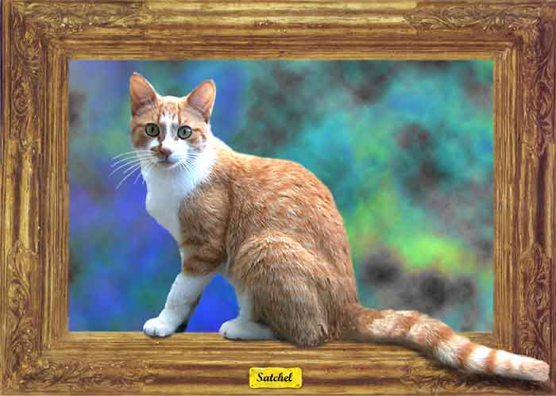

| Satchel. Paintage, air brush, colored pencil. Here he is. The dastardly father of those kittens you have seen in this and Gallery 2. He is also a feral cat, but very sweet and has us well trained to pet him when he comes around. He is now also fixed. |